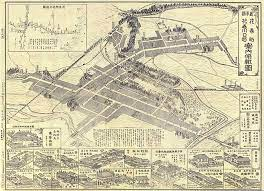
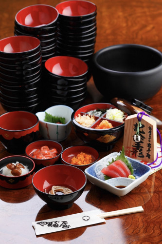
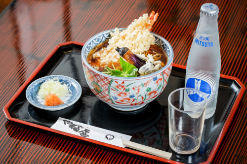
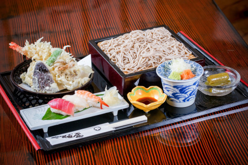

魅力ポイント：わんこそばの老舗
岩手県花巻市にある老舗のそば屋。明治37年(1904年)創業。
わんこそば発祥の地
400年以上前に南部家第27代利直公が江戸に上られる途中、花巻にお立ち寄りになられたおり、 そこで出されたそばを気に入って何度もおかわりした。宮沢賢治も足繁く通った。

名物のわんこそば！
わんこそばの醍醐味といったら、「はいどんどん。はいじゃんじゃん。」 の掛け声にあわせて用意された器にどんどんそばが入れられていきます。 「あーおなか一杯」と思っていても無理くりそばを投入してくるので、 覚悟してくださいね(笑)。

定食メニュー
もちろんサクッと食べれるボリュームの定食メニューもあります。 宮沢賢治が創業当時から足繁く通い食したと言われる天ぷらそばとサイダーのセットメニュー。 三ツ矢サイダーですが、当時を彷彿させる観点から瓶のサイダーです！ ブッシュセットは、天ぷらが5種類もあるうえ、お寿司も３貫ついて来ます。贅沢ですね！
-

-

ページ作成者の紹介
トップへ戻る